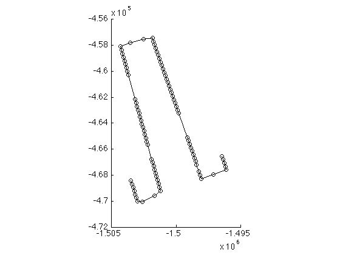
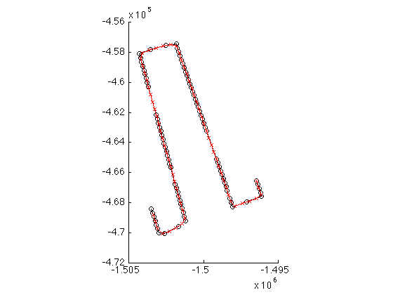
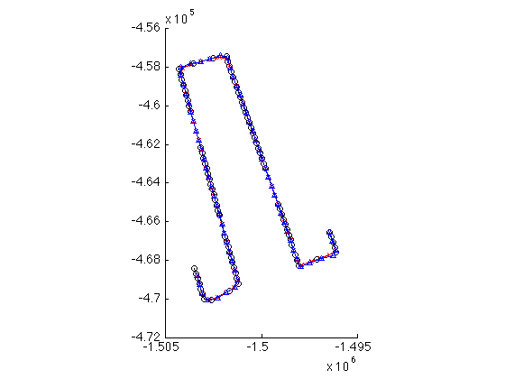
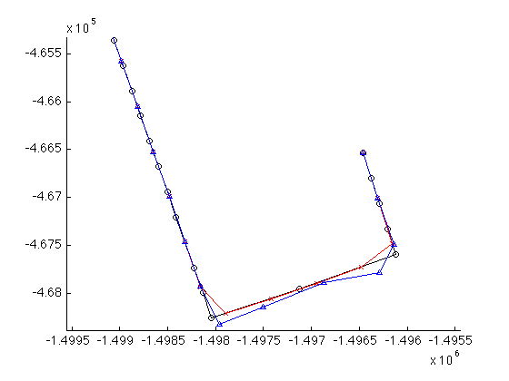
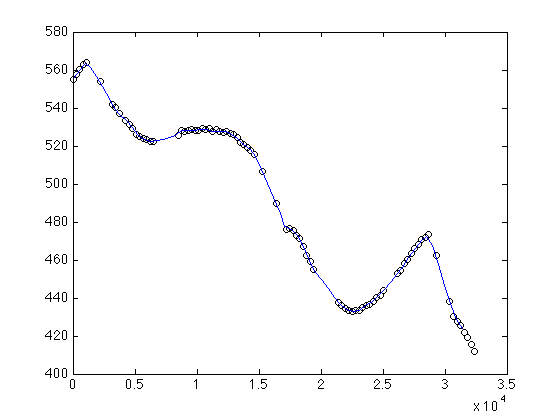
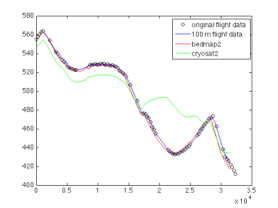

pspath documentation
pspath is part of Antarctic Mapping Tools for Matlab (Greene et al., 2017). Click here for a complete list of functions in AMT.
The pspath function returns coordinates a path with equal spacing in polar stereographic coordinates. This function might be used to find even spacing for common interpolation points along a satellite ground track.
Contents
Syntax
[lati,loni] = pspath(lat,lon,spacing) [xi,yi] = pspath(x,y,spacing) [...] = pspath(...,'method',InterpolationMethod)
Description
[lati,loni] = pspath(lat,lon,spacing) connects the geographic points lat,lon by a path whose points lati,loni are separated by spacing meters. If input coordinates are geo coordinates, output coodinates are also geo coordinates.
[xi,yi] = pspath(x,y,spacing) connects the polar stereographic points x,y by a path whose points xi,yi are separated by spacing meters. If input coordinates are polar stereographic coordinates, output coodinates are also polar stereographic coordinates.
[...] = pspath(...,'method',InterpolationMethod) specifies an interpolation method for path creation. Default is 'linear'.
Example
AMT comes with some sample data. Consider this segment of a sample flight line:
D = load('samplegrid.mat'); lat = D.lat(4000:10:5000); lon = D.lon(4000:10:5000); z = D.z(4000:10:5000); % And perhaps there's some missing data: lat([10 20:25 60:65 80:82]) = []; lon([10 20:25 60:65 80:82]) = []; z([10 20:25 60:65 80:82]) = []; plotps(lat,lon,'ko-')
That flight line is not spaced very evenly. Perhaps you want equal spacing-- let's get a path with a point every 500 m:
[lati,loni] = pspath(lat,lon,500);
plotps(lati,loni,'rx-')
 Maybe you prefer spline interpolation:
[lati_spline,loni_spline] = pspath(lat,lon,500,'method','spline'); plotps(lati_spline,loni_spline,'b^-')
We can zoom in for a closer look:
axis([-1499557 -1495441 -468396 -465326])
With even spacing, it's now possible to interpolate data to a common spacing for easy intercomparison. This is ideal for interpolating to a common spacing for repeat-track analysis. That doesn't really match our sample data, but the point is illustrated nonetheless. For example, we can interpolate the z data from the sample flight. If everything is in terms of path distance as the independent variable, use pathdistps to interpolate to
d = pathdistps(lat,lon); di = pathdistps(lati,loni); zi = interp1(d,z,di); figure plot(d,z,'ko') hold on plot(di,zi,'b.-')
We can even compare that to other datasets:
plot(di,bedmap2_interp(lati,loni,'surfw'),'r') plot(di,cryosat2_interp(lati,loni),'g') legend('original flight data','100 m flight data','bedmap2','cryosat2')
Note: The CryoSat-2 elevations seem silly compared to the other data, but there's a good chance they're right. I originally made the sample dataset by adding some noise to Bedmap2.
Citing AMT
If this function or any other part of Antarctic Mapping Tools is useful for you, please cite the paper that describes AMT.
Greene, C. A., Gwyther, D. E., & Blankenship, D. D. Antarctic Mapping Tools for Matlab. Computers & Geosciences. 104 (2017) pp.151-157. doi:10.1016/j.cageo.2016.08.003.
Author Info
This function was created by Chad A. Greene of the University of Texas at Austin Institute for Geophysics (UTIG), April 2016.